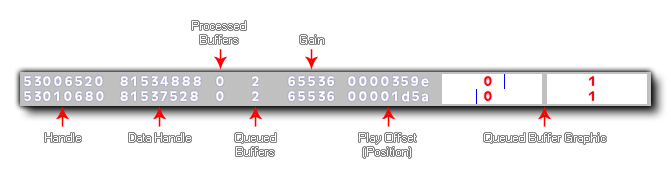

Esta función se puede usar para mostrar información de depuración sobre el sistema de audio, con true encenderlo y false para apagarlo Cuando depure el audio de esta manera, la superposición mostrará la siguiente información: 
- Handle - El controlador de fuente OpenAL (único para cada sonido reproducido)
- Manija de datos: el controlador de búfer OpenAL (muestra el mismo valor para varios sonidos con el mismo controlador de origen)
- Buffers procesados: cuántos buffers se han jugado
- Buffers en cola: cuántos buffers se han puesto en cola (y todavía están esperando para jugar)
- Gain - El valor de ganancia para el audio (0 - 65536)
- Play Offset - la posición de muestra (posición de reproducción actual) en el búfer actual
- Barras de búferes en cola: un pequeño diagrama de caja de los búferes procesados / en cola con el desplazamiento de juego (posición actual) dibujado como una línea azul
Para grupos de audio sincronizados, también tiene la función audio_sync_group_debug().
NOTA: esta función no funciona en la plataforma de destino HTML5.
audio_debug(enable);
| Argumento | Descripción |
|---|---|
| enable | Habilitar (configurar true ) o desactivar ( false ) depuración de audio. |
N/A
if (debug_mode)
{
audio_debug(true);
}
else
{
audio_debug(false);
}
El código anterior activará o desactivará la superposición de depuración de audio dependiendo de si el juego se ejecuta en modo de depuración o no.